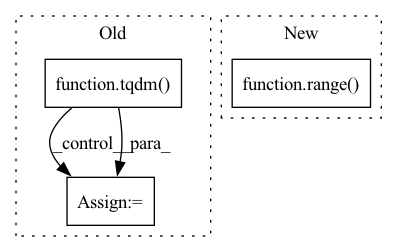

Pattern ID :11313
Before Change
test_loader = DataLoader(test_data, batch_size=1, shuffle=True, num_workers=4)
i = 0
loop = tqdm( test_loader)
for batch_idx, frames in enumerate(loop):
if i >= 10: break
frames = frames.to(DEVICE) // [1, T, 3, h, w]
frames_vis = postprocess_img(frames.squeeze(dim=0)) // [T, 3, h, w]
input = frames[:, :VIDEO_IN_LENGTH] // [1, t, 3, h, w]
pred_rgb = pred_rgb_model.pred_n(input, pred_length=VIDEO_PRED_LENGTH) // [1, T, 3, h, w]
pred_rgb_vis = postprocess_img(pred_rgb) // [T, 3, h, w]
pred_rgb = torch.cat([input, pred_rgb], dim=1)
pred_rgb = torch.stack([seg_model(pred_rgb[:, i]) for i in range(pred_rgb.shape[1])], dim=1)
pred_rgb = pred_rgb.argmax(dim=2).squeeze() // [T, h, w]
pred_then_colorized_vis = colorize_semseg(postprocess_mask(pred_rgb), num_classes=SYNPICK_CLASSES) // [T, 3, h, w]
frames_seg = [seg_model(frames[:, i]).argmax(dim=1) for i in range(frames.shape[1])]
frames_seg = torch.stack(frames_seg, dim=1) // [1, 1, h, w]
input_seg = frames_seg[:, :VIDEO_IN_LENGTH] // [1, t, 1, h, w]
pred_mask = pred_mask_model.pred_n(input_seg, pred_length=VIDEO_PRED_LENGTH)
pred_mask = pred_mask.argmax(dim=2) // [1, T, 1, h, w]
pred_mask = postprocess_mask(torch.cat([input_seg, pred_mask], dim=1).squeeze()) // [T, h, w]
pred_mask_vis = colorize_semseg(pred_mask, num_classes=SYNPICK_CLASSES) // [T, 3, h, w]
frames_colorized = colorize_semseg(postprocess_mask(frames_seg.squeeze()), num_classes=SYNPICK_CLASSES).unsqueeze(dim=0) // [1, T, 3, h, w]
frames_colorized_vis = postprocess_img(frames_colorized.squeeze(dim=0)) // [T, 3, h, w]
input_colorized = frames_colorized[:VIDEO_IN_LENGTH]
colorized_then_pred = pred_colorized_mask_model.pred_n(input_colorized, pred_length=VIDEO_PRED_LENGTH)After Change
pred_then_colorized_vis = colorize_semseg(postprocess_mask(pred_rgb), num_classes=SYNPICK_CLASSES).transpose(0, 3, 1, 2) // [T, 3, h, w]
frames_seg = torch.stack([seg_model(frames[:, i]) for i in range(frames.shape[1])], dim=1).argmax(dim=2) // [1, T, 1, h, w]
frames_seg_in = torch.stack([(frames_seg == i) for i in range( SYNPICK_CLASSES) ], dim=2).float() // [1, T, c, h, w] one-hot float
input_seg = frames_seg_in[:, :VIDEO_IN_LENGTH] // [1, t, c, h, w]
pred_mask = pred_mask_model.pred_n(input_seg, pred_length=VIDEO_PRED_LENGTH).argmax(dim=2) // [1, n, 1, h, w]
pred_mask = torch.cat([input_seg.argmax(dim=2), pred_mask], dim=1).squeeze() // [T, h, w]In pattern: SUPERPATTERN
Frequency: 3
Non-data size: 3
Instances Fragment ID: 38469675
Project Name: ais-bonn/vp-suite
Commit Name: 13016d4ab8ba4f8e7ee087155a6c5171f4d00ba3
Time: 2021-08-02
Author: boltres@ais.uni-bonn.de
File Name: scripts/visualize_4_way.py
M Class Name: AnonimousClass
N Class Name: AnonimousClass
M Method Name: visualize_4_way(1)
N Method Name: visualize_4_way(1)
M Parent Class:
N Parent Class:
M File Name: scripts/visualize_4_way.py
N File Name: scripts/visualize_4_way.py
M Start Line: 16
M End Line: 73
N Start Line: 17
N End Line: 74
Before Change
features_id = None
features_row = None
for root, dirs, files in tqdm( os.walk(feature_dir)) :
for name in files:
path = os.path.join(root, name)
features = np.load(path)
centroid_dist = np.linalg.norm(features - centroid, axis=1)
if np.min(centroid_dist) < min_dist:After Change
features_id = None
features_row = None
for i in tqdm(range( counter) ):
centroid_dist = np.linalg.norm(features[i] - centroid, axis=1)
if np.min(centroid_dist) < min_dist:
path = feature_paths[i] Fragment ID: 38469689
Project Name: ammesatyajit/videobert
Commit Name: e6cec027ebc3f4a4a2270a4e406ea9dc9fd16856
Time: 2021-01-01
Author: ammesatyajit@gmail.com
File Name: VideoBERT/data/centroid_to_img.py
M Class Name: AnonimousClass
N Class Name: AnonimousClass
M Method Name: img_path_from_centroid(3)
N Method Name: img_path_from_centroid(3)
M Parent Class:
N Parent Class:
M File Name: VideoBERT/data/centroid_to_img.py
N File Name: VideoBERT/data/centroid_to_img.py
M Start Line: 30
M End Line: 41
N Start Line: 30
N End Line: 39
Before Change
List of averaged scores
self.model.eval()
for (X, y, bias, X_mask, y_mask, time_stamps) in tqdm( self.valid_dataloader) :
X = X.to(self.device)
y = y.to(self.device)
bias = bias.to(self.device)
X_mask = X_mask.to(self.device)
y_mask = y_mask.to(self.device)
if time_stamps is not None:
time_stamps = time_stamps.to(self.device)
with torch.no_grad():
Z = self.model(X, bias, X_mask, time_stamps)
Z = self.scaler.inv_transform(Z)
y = self.scaler.inv_transform(y)
for metric in self.metrics:
metric.update(Z, y, y_mask)
ave_scores = []After Change
Z = self.model(X, bias, X_mask, time_stamps)
batch_size = X.size(0)
if self.denorm is True:
for i in range( batch_size) :
Z[i] = y_inv_transforms[i](Z[i])
y[i] = y_inv_transforms[i](y[i])
for metric in self.metrics: Fragment ID: 38469670
Project Name: takuyashintate/tsts
Commit Name: e952ef63302c29b32c95e17f46dfcaabd2ad1b85
Time: 2021-09-14
Author: kmdbn2hs@gmail.com
File Name: tsts/trainers/trainer.py
M Class Name: SupervisedTrainer
N Class Name: SupervisedTrainer
M Method Name: on_val(1)
N Method Name: on_val(1)
M Parent Class: Trainer
N Parent Class: Trainer
M File Name: tsts/trainers/trainer.py
N File Name: tsts/trainers/trainer.py
M Start Line: 135
M End Line: 149
N Start Line: 146
N End Line: 178